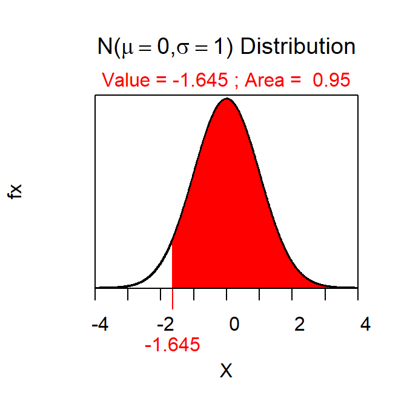

Steps to Follow
Constructing a confidence region is a five-step process as described below.
- Determine level of confidence (C) with 100(1-α)%.
- For example, if α=0.05 then C=100(1-0.95)=95%.
- Determine type of confidence region.
- If HA is a “less than” then construct an “upper confidence bound.”
- If HA is a “greater than” then construct an “lower confidence bound.”
- If HA is a “not equals” then construct an “confidence interval.”
- Determine Z* by shading on the standard normal distribution (mean=0,SD/SE=1) an area of C according to HA.
- If HA is a “less than” then shade C to the left and Z* is positive.
- If HA is a “greater than” then shade C to the right and Z* is negative.
- If HA is a “not equals” then shade C in the middle to get two Z*s that are positive and negative. (To use
distrib() here you will need to put half of the area outside of C into each tail of the distribution.)
- Construct confidence region value(s) with \(\bar{x}+Z^{*}\frac{\sigma}{\sqrt{n}}\).
- Interpret the confidence region. If the question has a context then the parameter should be stated within the context of the question.
- If HA is a “less than” then the parameter (i.e., population mean) is said to be less than the confidence region value.
- If HA is a “greater than” then the parameter (i.e., population mean) is said to be greater than the confidence region value
- If HA is a “not equals” then the parameter (i.e., population mean) is said to be between the two confidence region values.
First Example
Suppose that I hypothesized that the mean time to take a quiz is less than 100 minutes and that, in a sample of 30 students, the mean time to take the quiz was 95.2 minutes. Further, suppose that σ=20 and α=0.10.
- C=100(1-0.10)=90%
- An upper confidence bound because HA is a “greater than.”
- Z*=1.282 as shown below.
- The confidence region value is thus 95.2+1.282\(\frac{20}{\sqrt{30}\) = 95.2+4.7=99.9.
- I am 90% confident that the mean time for all students to take the quiz is less than 99.9 minutes.
> distrib(0.9,type="q")

Second Example
Suppose that I hypothesized that the mean time to walk between the Science Center and the Ponzio Center is more than 7 minutes and that, in a sample of 50 students, the mean time to make this walk was 8.3 minutes. Further, suppose that σ=1.3 and α=0.05.
- C=100(1-0.05)=95%
- A lower confidence bound because HA is a “less than.”
- Z*=-1.282 as shown below.
- The confidence region value is thus 8.3-1.645\(\frac{1.3}{\sqrt{50}\) = 8.3+0.30=8.60.
- I am 90% confident that the mean time for all students to walk between the Science Center and the Ponzio Center is more than 8.60 minutes.
> distrib(0.95,type="q",lower.tail=FALSE)

Third Example
Suppose that I hypothesized that the mean time students spend preparing for the prep check is different than 30 minutes and that, in a sample of 40 students, the mean preparation time was 37.8 minutes. Further, suppose that σ=9.7 and α=0.01.
- C=100(1-0.01)=99%
- A confidence interval because HA is a “not equals.”
- Z*=±2.576 as shown below.
- The confidence region value is thus 37.8±2.576\(\frac{9.7}{\sqrt{40}\) = 37.8±3.95=(34.27,41.33).
- I am 99% confident that the mean time that all students spend preparing for the prep checks is between 34.27 and 41.33 minutes.
> distrib(0.005,type="q")